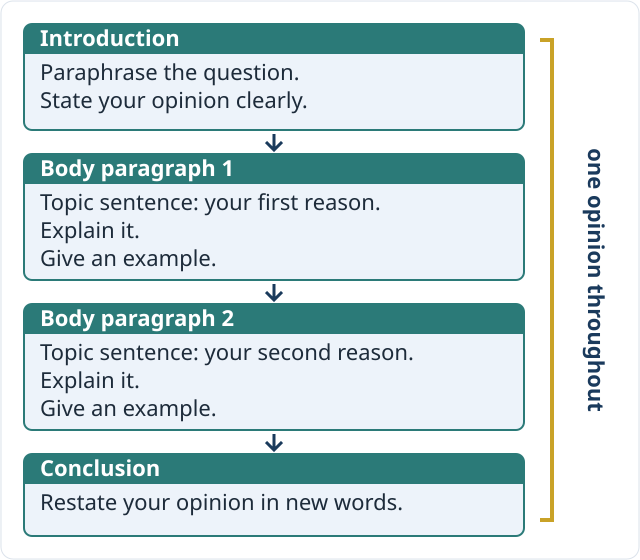

By the end of this exercise, you can write an opinion essay that states a clear position, keeps it from introduction to conclusion and links ideas logically.
IELTS Writing Task 2 is an essay of at least 250 words in response to a question or statement. You have about 40 of the 60 minutes for it, and it counts for twice as much as Task 1. “To what extent do you agree or disagree?” questions want your own opinion — stated clearly and kept the same all the way through.
Your feedback is sent to this address. We don’t ask for your name.
Your writing is checked once with AI help (Claude), then a teacher checks the feedback before you get it. Privacy policy
Free IELTS Writing Task 2 practice for “to what extent do you agree” essays: hold a clear position, choose linkers by function and write topic sentences.
Read the model essay. Choose the word or phrase that keeps the writer’s position clear and the ideas connected.

Some people think that all university students should be required to study at least one subject outside their main field. To what extent do you agree or disagree?
In many countries, university students spend almost all of their time on a single subject. Some people argue that every student should also have to take at least one course outside their main field. I strongly agree with this view, because such courses build useful skills and help students make better decisions about their future.
The main reason this idea is that employers value people who can work across subjects. An engineer who has studied some economics, for example, is better able to judge whether a project is worth its cost. , a single extra course can make a graduate more useful in the workplace.
A second argument compulsory courses is that many students choose their main subject at eighteen, before they know what they really enjoy. A course in a different field gives them the chance to discover new interests while there is still time to change direction.
, some students may feel that an extra course takes time away from their main subject. However, this cost is small: one course is only a fraction of a full timetable, and universities can let students choose a course they find interesting.
, I believe that the benefits of a compulsory outside course clearly the costs. Universities should therefore make it a requirement for all students.
Decide what each linker has to do — add, contrast, show a result or give an example — and choose the one that does that job.
Choose the best first sentence for each paragraph: the one that states the main idea the rest of the paragraph explains. Item 5 reviews Writing Task 1.
Write an essay for an IELTS examiner on the question below. State your position in the introduction, support it in two or three body paragraphs and repeat it in your conclusion.
Review your answers below, then send them to the teacher.
Click the button below to send your answers, including your writing, to the teacher at EnglishOnline.training.